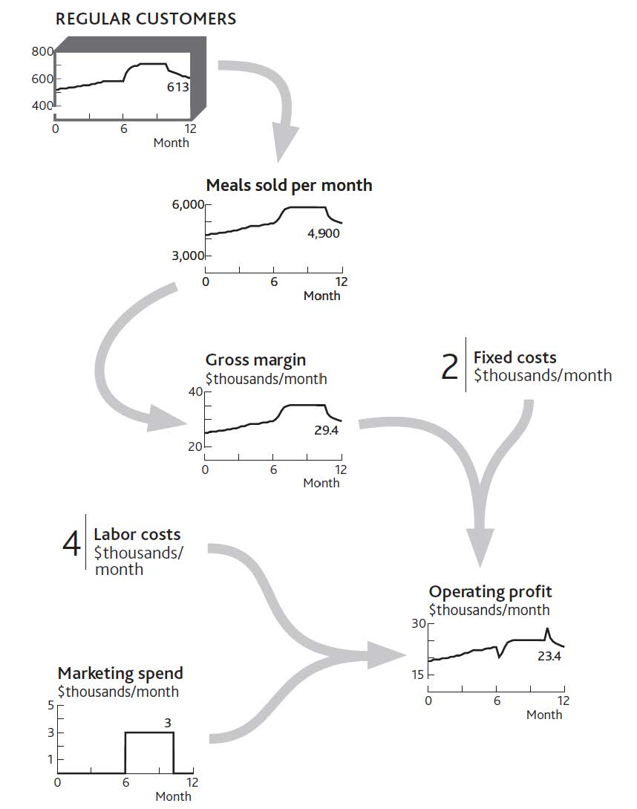
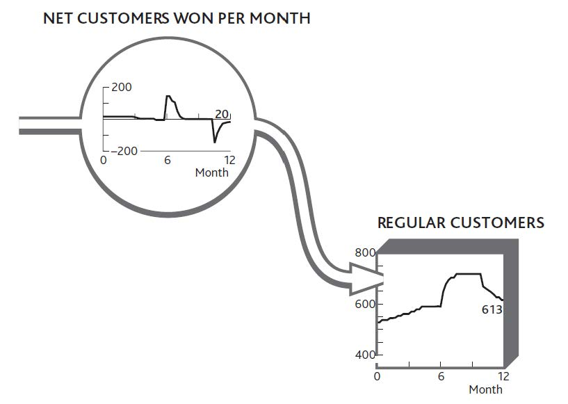
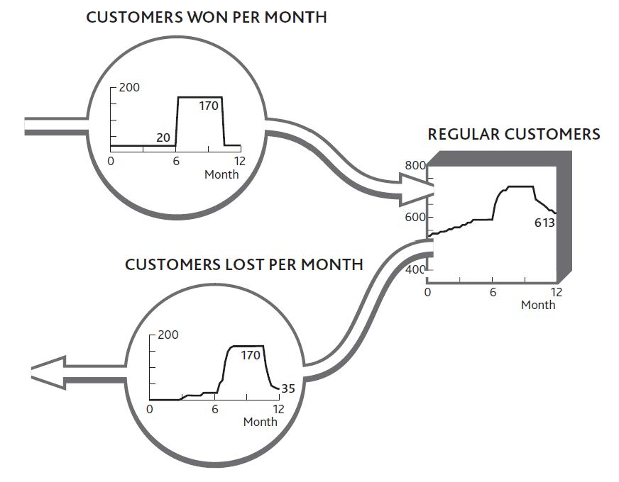

Why are we so concerned about this “bathtub behavior” that all resources follow? Remember the problem we set out to solve, namely, what determines performance through time and how can management affect performance in the future. The logic is simple:
Consider your restaurant and see how these connections work (Figure 3.4 "How Changing Customer Numbers Drives Performance Over Time (for clarity, some items are not shown)"). In Chapter 2 "Resources: Vital Drivers of Performance" we looked at how the number of meals sold and the operating profits had changed during the previous 12 months and showed how these figures were driven by the number of customers and staff. Following the same logic, we next need to know what happened to customers and staff to bring about the performance history in Figure 2.1 "The Explanation for Restaurant Sales and Labor Costs" and the inflows and outflows to these two resources.
It is crucial to explain why the resource of customers developed over time as it did, and the only way to do this is to understand the flows (Figure 3.5 "The Net Flow of Customers Into and Out of Your Regular Customer Group").
Figure 3.4 How Changing Customer Numbers Drives Performance Over Time (for clarity, some items are not shown)
Figure 3.2 "Working Out Growth and Loss of Customers Through Time" and Figure 3.3 "The Change in Customer Numbers Over Time" label the flows entering and leaving the customer resource as “Customers won/lost during the month.” This is always the relationship between resources and the flows that fill or drain them: Whatever the resource in the tank, the flows are “[resource] per [time period].”
There is never any exception to this rule!
Figure 3.5 The Net Flow of Customers Into and Out of Your Regular Customer Group
You can put flesh on these bones. By asking your customers if and when they have previously visited, you get a good idea of the inflow rate. Although you cannot easily ask how many people become ex-customers each month (because they are not there to be asked!), you can work out what the outflow must have been to reconcile with the net change each month (Figure 3.6 "The Separate Flows of Customers Into and Out of Your Regular Customer Group").
Figure 3.6 The Separate Flows of Customers Into and Out of Your Regular Customer Group
If your restaurant experienced only the flows shown in Figure 3.5 "The Net Flow of Customers Into and Out of Your Regular Customer Group", you might be tempted to take the complacent view that nothing much is happening. Apart from the two puzzling spikes of customer gains around month 7 and losses around month 11, everything seems to be ticking along steadily enough.
But appearances are misleading. During the middle period, turbulent activity is taking place, with lots of customers arriving and many others leaving. In fact, customer churn is so rapid that by months 9 and 10, you are almost certainly losing many of the customers that your marketing efforts brought in just a short time before.
The factors driving resource gains are typically quite different from those driving losses, so you stand little chance of solving these challenges without distinguishing between the two flows.
Always try to identify resource “gain” and “loss” rates separately.